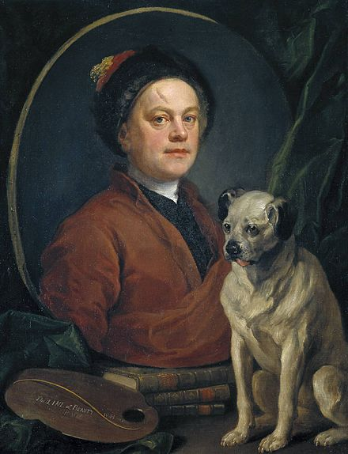
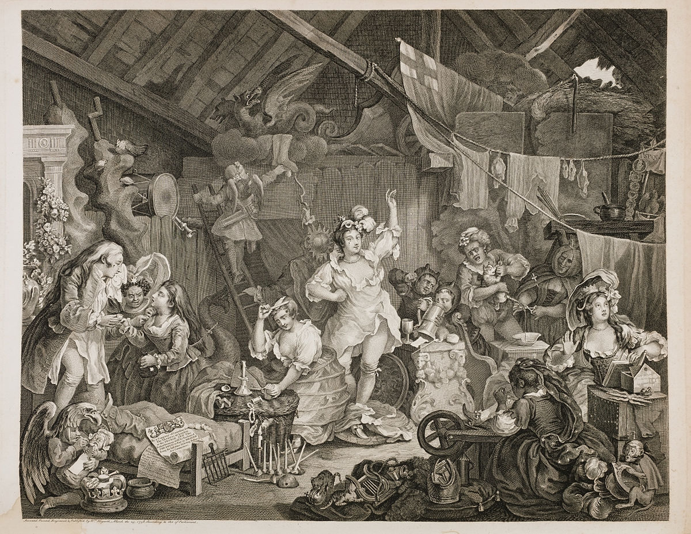
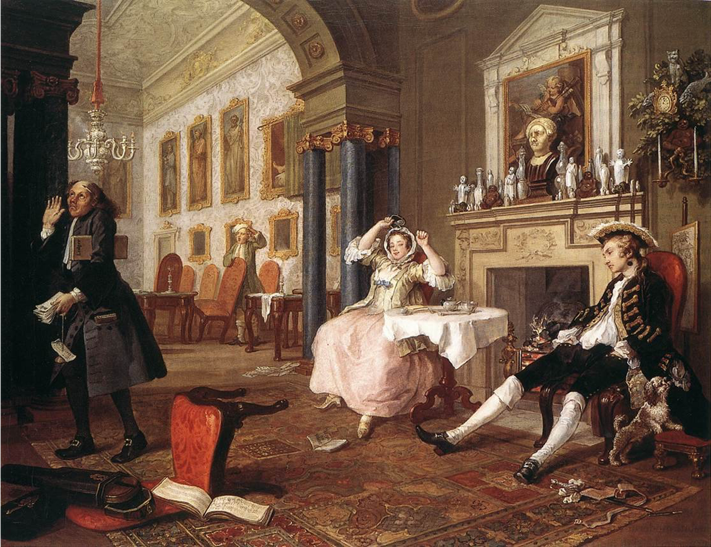
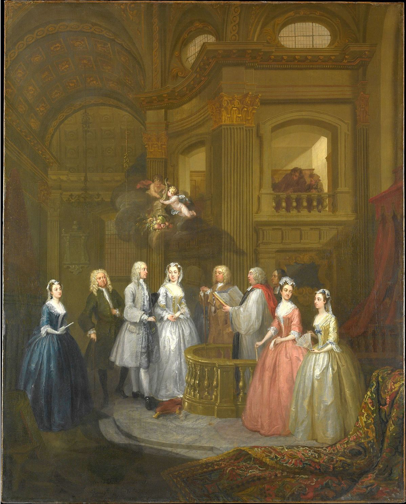

About William Hogarth
William Hogarth (10 November 1697 – 26 October 1764) was an English painter, printmaker, pictorial satirist, social critic, and editorial cartoonist. His work ranges from realistic portraiture to comic strip-like series of pictures called "modern moral subjects", and he is perhaps best known for his series A Harlot's Progress, A Rake's Progress and Marriage A-la-Mode. Knowledge of his work is so pervasive that satirical political illustrations in this style are often referred to as "Hogarthian".
William Hogarth, The Painter and his Pug, 1745. Self-portrait with his pug, Trump, in Tate Britain, London.
Career of William Hogarth
- Apprenticed to a silversmith at the age of 15.
- He opened his own engraving and printing shop at 22.
- In 1728 he embarked on a painting career with a work that reveals his interest in theatre and comic subject matter.
- He published his satirical eight-part series The Rake’s Progress in 1735.
Representative Works
Strolling Actresses Dressing in a Barn
Strolling Actresses Dressing in a Barn, etching and engraving by William Hogarth, 1738; in the Metropolitan Museum of Art, New York City.
The Tête à Tête
The Tête à Tête, oil painting, part of the Marriage A-la-Mode series by William Hogarth, c. 1743; in the National Gallery, London.
The Wedding of Stephen Beckingham and Mary Cox
TheThe Wedding of Stephen Beckingham and Mary Cox, oil on canvas by William Hogarth, 1729; in the Metropolitan Museum of Art, New York City.
Influence and Reputation
Hogarth's works were a direct influence on John Collier, who was known as the "Lancashire Hogarth".[79] The spread of Hogarth's prints throughout Europe, together with the depiction of popular scenes from his prints in faked Hogarth prints, influenced Continental book illustration through the 18th and early 19th centuries, especially in Germany and France. He also influenced many caricaturists of the 18th, 19th and 20th centuries. Hogarth's influence lives on today as artists continue to draw inspiration from his work.
Wikipedia of William Hogarth